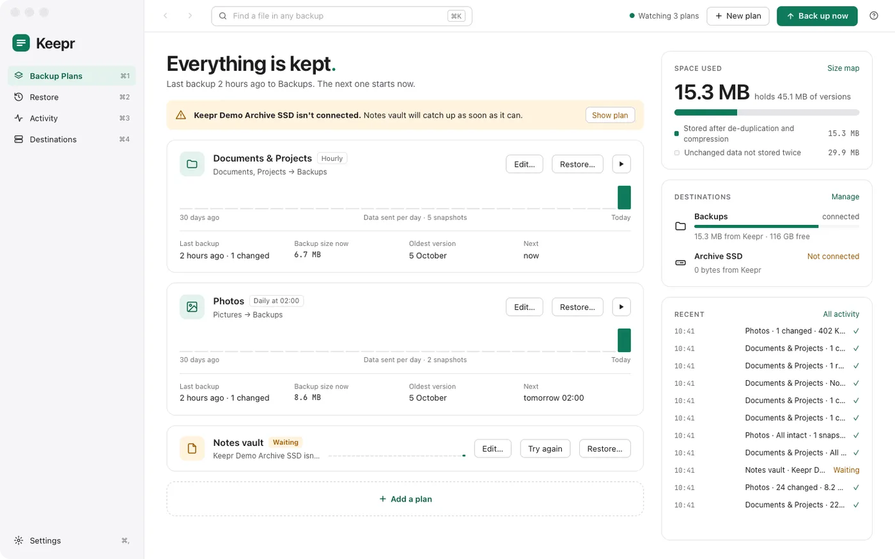

Only what changed.
The first backup copies everything. After that, each one stores only the pieces that changed.
Files are split by their content, and each piece is kept once, compressed, however many files and backups share it.
Keepr backs up the folders you choose to a drive, a NAS, a cloud folder or an S3 bucket, and keeps every version, so you can bring back any file as it was.
For Apple silicon Macs running macOS 13 or later.

The first backup copies everything. After that, each one stores only the pieces that changed.
Files are split by their content, and each piece is kept once, compressed, however many files and backups share it.
Folders on your Mac, a drive, an SMB share, a cloud folder or an S3 bucket. Backed up every 15 minutes, hourly, daily, weekly, or when you ask.
Rules and .gitignore files exclude what you don't need. Skip files that live only in the cloud, or that apps mark as not worth backing up.
Every backup for a day, one a day for a month, one a week for a year, one a month for ever. Deleted files are kept for at least 90 days.
Step through the snapshots and see your files as they were on that day, folder by folder. Restore them to where they were, or somewhere else.
Pick a file to see each version of it. Quick Look one, compare it with the file on your Mac, and bring back the one you want.
Type part of a name and Keepr searches every plan and every snapshot. Pick a result to see its versions.
A size map draws each folder as big as the files it holds, in one snapshot or across every plan. Click to zoom in.
Set a password and Keepr gives you a recovery key. Everything is encrypted on your Mac, so the drive, the share or the cloud service that holds your backups can't read them.
Budget 2026.numbers Wedding speech.pages Finance/Tax return 2025.pdf Letters/To the bank.pages Projects/keepr/design-notes.md
Budget 2026.numbers Wedding speech.pages Finance/Tax return 2025.pdf Letters/To the bank.pages Projects/keepr/design-notes.md
Each plan has its own destination. Keep one on the drive beside your Mac and another in a bucket far away.
Press ? and help for the screen you're on opens beside it, with search and step-by-step guides to get started.
A still copy of the disk means files that change mid-backup are copied as they were at one moment. Keepr reads a sample of every backup back to make sure it can be restored.
Keepr is open source under the GNU General Public License. Use it, share it and change it. Built with Tauri, FastCDC, zstd, BLAKE3 and XChaCha20-Poly1305.
For a Mac with Apple silicon running macOS 13 or later.
Latest release on GitHub.